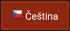

Multijazyčnost
Aplikace je vytvořena v české a anglické verzi.
POZOR! Veškeré informace a hlášení, které se generují na serveru (např. zápis z OSN) jsou pouze v lokálním (primárním) jazyce příslušného státu. Důvodem je, aby data přicházející do Kollecta byla ve stejném jazyce, jako jsou data Kollecta.
Zobrazení systémových textů v aplikaci aplikaci je možné přeložit do libovolného jazyka, tento se pak přidá do menu.
